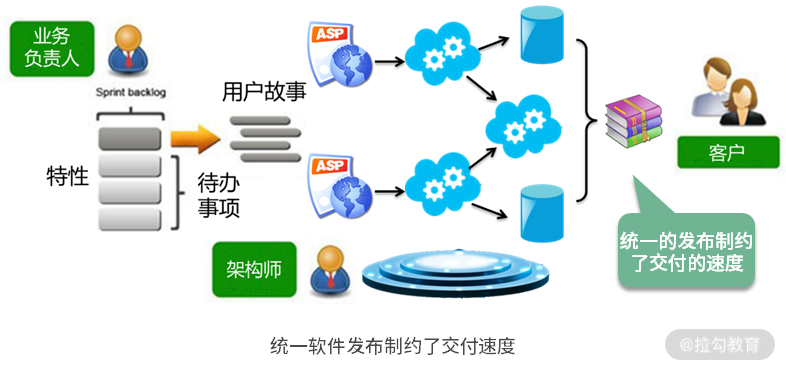
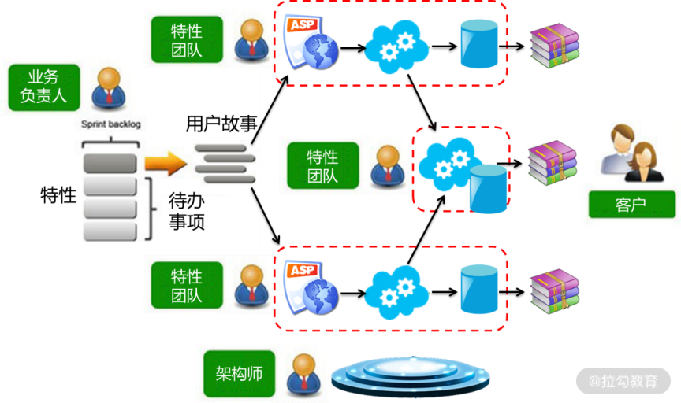
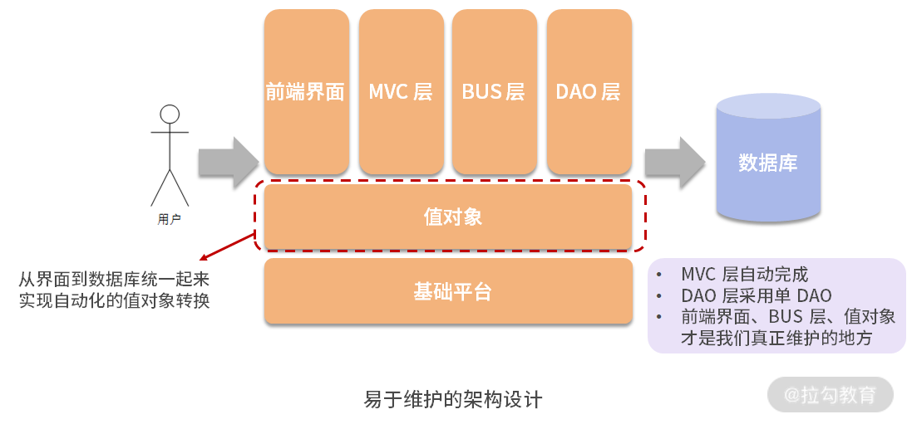

- 00 开篇词 让我们把 DDD 的思想真正落地.md.html
- 01 DDD ：杜绝软件退化的利器.md.html
- 02 以电商支付功能为例演练 DDD.md.html
- 03 DDD 是如何落地到数据库设计的？.md.html
- 04 领域模型是如何指导程序设计的？.md.html
- 05 聚合、仓库与工厂：傻傻分不清楚.md.html
- 06 限界上下文：冲破微服务设计困局的利器.md.html
- 07 在线订餐场景中是如何开事件风暴会议的？.md.html
- 08 DDD 是如何解决微服务拆分难题的？.md.html
- 09 DDD 是如何落地微服务设计实现的？.md.html
- 10 微服务落地的技术实践.md.html
- 11 解决技术改造困局的钥匙：整洁架构.md.html
- 12 如何设计支持快速交付的技术中台战略？.md.html
- 13 如何实现支持快速交付的技术中台设计？.md.html
- 14 如何设计支持 DDD 的技术中台？.md.html
- 15 如何设计支持微服务的技术中台？.md.html
- 16 基于 DDD 的代码设计演示（含 DDD 的技术中台设计）.md.html
- 17 基于 DDD 的微服务设计演示（含支持微服务的 DDD 技术中台设计）.md.html
- 18 基于事件溯源的设计开发.md.html
- 捐赠
12 如何设计支持快速交付的技术中台战略？
我们以往建设的系统都分为前台和后台，前台就是与用户交互的 UI 界面，后台就是服务端完成的业务逻辑操作。然而，在我们以往开发的很多业务系统中，有一些内容是共用的部分，在未来开发的业务系统中也要使用。因此，如果能把这些内容提取出来做成公用组件，那么在未来，开发系统就简单了，不用每次都重头开发，复用这些组件就可以了。
但是，这些公用的组件到底属于前台还是后台呢？都不属于。它既包含前台的界面，也包含后台的逻辑，因此被称为“中台”。所谓的中台，就是将以往业务系统中可以复用的前台与后台代码，剥离个性、提取共性，形成的公用组件。有了这些组件，就可以使日后的系统开发降本增效、提高交付速度。因此，阿里提出了“小前台、大中台”的战略，得到了业界的普遍认可。
从分类上看，中台分为业务中台、技术中台与数据中台。
- 业务中台，就是将抽象的业务组件，如用户权限、会员管理、仓储管理、物流管理等公用组件，做成微服务，各个业务系统都可以使用。
- 技术中台，就是封装各个业务系统所要采用的技术框架，设计出统一的 API，使上层的业务开发技术门槛降低、开发工作量减少、提升交付速度。
- 数据中台，则是整理各个业务系统的数据，建立数据存储与运算的平台，为各个系统的数据的分析与利用提供支持。
清楚了这些概念，你就清楚了支持 DDD 与微服务的技术中台的设计思路。它是将 DDD 与微服务的底层技术进行封装，从而支持开发团队在未来实现快速交付，以应对激烈竞争的市场。因此，首先必须要清楚实现快速交付的技术痛点，才能清楚这个技术中台该如何建设。
打造快速交付团队
许多团队都有这样一个经历：项目初期，由于业务简单，参与的人少，往往可以获得一个较快的交付速度；但随着项目的不断推进，业务变得越来越复杂，参与的人越来越多，交付速度就变得越来越慢，使得团队越来越不能适应市场的快速变化，从而处于竞争的劣势。然而，软件规模化发展是所有软件发展的必然趋势。因此，解决规模化团队与软件快速交付的矛盾就成了我们不得不面对的难题。

烟囱式的开发团队
为什么团队越大交付速度越慢呢？如上图是我们从需求到交付的整个过程。在这个过程中，我们要经历多个部门的交互，才能完成最终的交付，大量的时间被耗费在部门间的沟通协调中。这样的团队被称为“烟囱式的开发团队”。
烟囱式的软件开发
烟囱式的开发团队又会导致烟囱式的软件开发。如上图所示，在大多数软件项目中，每个功能都要设计自己的页面、Controller、Service 以及 DAO，需要编写大量的代码，并且很多都是重复代码。代码写得越多 Bug 就越多，日后变更也越困难。

最后，统一的发布也制约了交付的速度。如上图，当业务负责人将需求分配给多个团队开发时，A 团队的工作可能只需要 1 周就能完成。但是，当 A 团队完成了他们的工作以后，能立即交付给客户吗？答案是不能，因为 B 团队需要开发 2 周，A 团队只能等 B 团队开发完成以后才能统一发布。统一的发布制约了系统的交付速度，即使 A 团队的开发速度再快，不能立即交付用户就不能产生用户价值。
随着系统规模越来越大，功能越来越多、越来越复杂，开发系统的团队规模也越来越大。这样就会导致开发团队的工作效率越来越低，交付周期越来越长，技术转型也越来越困难。

特性团队的组织形式
如何解决这一问题呢？如上图，首先，需要调整团队的组织架构，将筒状的架构竖过来，称为“特性团队”。在特性团队中，每个团队都直接面对终端客户。比如购物团队面对的是购物功能，所有与购物相关的功能都是他们来负责完成，包括从需求到研发，从 UI 到应用再到数据库。最后，经过测试，也是这个团队负责上线部署。这样，整个交付过程都是这个团队负责，没有了那么多团队间的沟通协调，交付速度自然就提升了。
大前端+技术中台
有了特性团队的组织形式，如果还是统一发布，那么交付速度依然提升不了。因此，在特性团队的基础上，软件架构采用了微服务的架构，即每个特性团队各自维护各自的微服务。这样，当该团队完成了一次开发，则自己独立打包、独立发布，不再需要等待其他团队。这样，交付速度就可以得到大幅度提升。如下图所示：

大前端 + 技术中台的组织形式
特性团队 + 微服务架构，可以有效地提高规模化团队的交付速度。然而，仔细思考一下就会惊奇地发现，要这样组建一个特性团队，成本是非常高昂的。团队每个成员都必须既要懂业务，也要懂开发；既要懂 UI、应用，还要懂数据库，甚至大数据，做全栈工程师。如果每个特性团队都是这样组建，每个成员都是全栈工程师，成本过高，是没有办法真正落地的。那么，这个问题该怎么解决呢？
解决问题的关键在于底层的架构团队。这里的架构团队就不再是架构师一个人，而是一个团队。
- 架构团队通过技术选型，构建技术中台，将软件开发中诸如 UI、应用、数据库，甚至大数据等诸多技术进行了封装；
- 然后以 API 接口的形式开放给上层业务。
这样的组织形式，业务开发的技术门槛将得到降低，开发工作量也会减少。这样，特性团队的主要职责将发生变化，即从软件技术中解脱出来，将更多的精力放到对需求的理解、对业务的实现，从而提高用户的体验，这就是“大前端”。所谓大前端，是一种职能的转变，即业务开发人员不再关注技术，而是更加关注业务，深刻地理解业务，并快速应对市场对业务需求的变化。
采用“大前端+技术中台”的战略，为了团队设计能力以及交付速度的提升，需要架构团队的支撑。架构团队从业务开发的角度进行提炼，提炼共性、保留个性，将这些共性沉淀到技术中台中。这样的技术中台，需要 DDD 与微服务架构的支持。通过将 DDD 与微服务涉及的各个技术组件封装到技术中台中，封装各个技术细节，就能很好地支持各业务团队快速开发业务，快速交付用户，进而让团队获得市场竞争优势。
通过以上的分析，我们理清了技术中台建设的需求。为了提高开发团队的交付速度，提升市场竞争力，需要在系统的底层进行技术中台的建设。打造这样一个支持快速交付的技术中台，应当具备以下特征。
(1) 简单易用、快速便捷的技术中台
它能够明显降低软件开发的工作量，使软件系统易于变更、易于维护、易于技术更迭，进而明显降低业务开发人员的技术门槛。通过前面讲的单 Controller、单 DAO 的架构设计，就能够达到这个目的，关键是这个设计思想如何落地。
(2) 易于技术架构演化
我们打造的技术中台可以帮助开发团队调整技术架构，进行技术架构演化，并有效地降低技术架构演化的成本。这就要求系统在进行架构设计时，能够有效地将技术框架与业务代码解耦。采用整洁架构、六边形架构、CQRS 等架构设计模式，就可以帮助我们完成解耦。
(3) 支持领域驱动与微服务的技术架构
前面讲了领域驱动设计的思想，但要将这样的思想落地到软件项目中，甚至最终落地到微服务架构中，也需要这样一个技术中台，支持领域驱动与微服务技术架构。
简单易用的技术中台建设
首先，我们来看一看，如何打造一个简单易用的技术中台，即如何简化开发。以往的软件项目在研发的过程中需要编写太多的代码，这既加重了软件研发的工作量，延缓了软件交付的速度，又使得日后的维护与变更成分加大。软件研发的一个非常重要的规律就是：
- 你写的代码越多，可能出现 Bug 的概率就越高，日后的维护与变更就越困难；
- 你写的代码越少，Bug 就越少，日后维护与变更就越容易。
俗话说：小船好掉头，泰坦尼克号看见冰山了为什么要撞上去？因为它实在太大了，根本来不及掉头。写代码也是一样的，一段 10 来行的代码变更会很容易，但一段数百上千行的代码变更就非常复杂。因此，我们设计软件应当秉承这样的态度：宁愿花更多的时间去分析设计，让软件设计精简到极致，从而花更少的时间去编码。俗话说：磨刀不误砍柴工。用这样的态度编写出来的代码，既快又易于维护。

接着，看一看在以往软件研发过程中存在的问题。以往的软件项目在研发的过程中需要编写太多的代码了，每个功能都要编写自己的 UI、Controller、Service 和 DAO。并且，在每一个层次中都有不同格式的数据，因此我们编写的大量代码都是在进行各个层次之间的数据格式转换。如下图所示：

譬如，前端以 Form 的形式传输到后台，这时后台由 MVC 层从 Model 或者 Request 中获得，然后将其转换成值对象，接着去调用 Service。然而，从 Model 或者 Request 中获得数据以后，由于我们在 MVC 层的 Controller 中写了太多的判断与操作，再将其塞入值对象中，所以这里耗费了太多的代码。
接着，在 Service 中经过各种业务操作，最后要存盘的时候，又要将 VO 转换为 PO，将数据持久化存储到数据库中。这时，又要为每一个功能编写一个 DAO。我们写的代码越多，日后维护与变更就越困难。那么，能不能将这些转换统一成公用代码下沉到技术中台中呢？基于这样的思想，系统架构调整为这样：

在这个架构中，将各个层次的数据都统一成值对象，这是怎样统一的呢？首先，在前端的数据，现在越来越多的前端框架都是以 JSON 的形式传递的。JSON 的数据格式实际上是一种名 - 值对。因此，可以制订一个开发规范，要求前端 JSON 对象的设计，与后台值对象的格式一一对应。这样，当 JSON 对象传递到后台后，MVC 层就只需要一个通用的程序，以统一的形式将 JSON 对象转换为值对象。这样，还需要为每个功能编写 Controller 吗？不用了，整个系统只需要一个 Controller，并将其下沉到技术中台中。
同样，Service 在经过了一系列的业务操作，最后要存盘的时候，可以这样做：制作一个vObj.xml 的配置文件来建立对应关系，将每个值对象都对应数据库中的一个表，哪个属性就对应哪个字段。这样，DAO 拿到哪个值对象，就知道该对象中的数据应当保存到数据库的哪张表中。这时，还需要为每个功能编写一个 DAO 吗？不用了，整个系统只需要一个 DAO。
通过以上的设计思想架构的系统，开发工作量将极大地降低。在业务开发时，每个功能都不用再编写 MVC 层了，就不会将业务代码写到 Controller 中，而是规范地将业务代码编写到 Service或值对象中。接着，整个系统只有一个 DAO，每个功能的 Service 注入的都是这一个 DAO。这样，真正需要业务开发人员编写的仅限于前端 UI、Service 和值对象。而 Service 和值对象都是源于领域模型的映射，因此业务开发人员就会将更多的精力用于功能设计与前端 UI，给用户更好的用户体验，也提高了交付速度。
总结
我们采用 DDD 是为了更深刻地理解业务，做出用户满意的产品；我们还需要快速交付产品，以应对竞争激烈且瞬息万变的市场。这两方面需要双管齐下，才能获得市场竞争的优势。因此，我们不仅要学习 DDD，还要学习如何建立支持 DDD 的技术中台，实现快速交付。
本讲讲解了如何构建一个简单易用的技术中台。下一讲将在此基础上进一步讲解这个中台的设计实现，即如何实现单 Controller，如何实现单 DAO，如何做通用的仓库与工厂，等等。
© 2019 - 2023 Liangliang Lee. Powered by gin and hexo-theme-book.